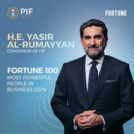

My name is Yasir Al-Rumayyan, a distinguished Saudi businessman widely recognized for my leadership in shaping the economic landscape of Saudi Arabia. As the Governor of the Public Investment Fund (PIF), I have been instrumental in directing the fund’s strategic investments both locally and globally. I also serve as the Chairman of Saudi Aramco and Ma’aden.
I was born in Buraidah, Al-Qassim region, where I completed my early education. I later moved to Al-Ahsa and earned a Bachelor’s degree in Accounting from King Faisal University. To refine my strategic skills, I completed executive programs at Harvard Business School in the USA.
My career began in the banking sector with Samba Financial Group and Banque Saudi Fransi. Later, I became the CEO of Investments Capital, marking my shift toward capital markets.
In 2015, I became an advisor to the Royal Court, and in 2016, I was appointed as the Governor of PIF. I led investments into sectors like technology, tourism, sports, and renewable energy.
I also led the IPO of Saudi Aramco, the largest in history, and oversaw PIF’s acquisition of Newcastle United Football Club. My mission is to promote innovation, youth empowerment, and help realize the goals of Saudi Vision 2030.